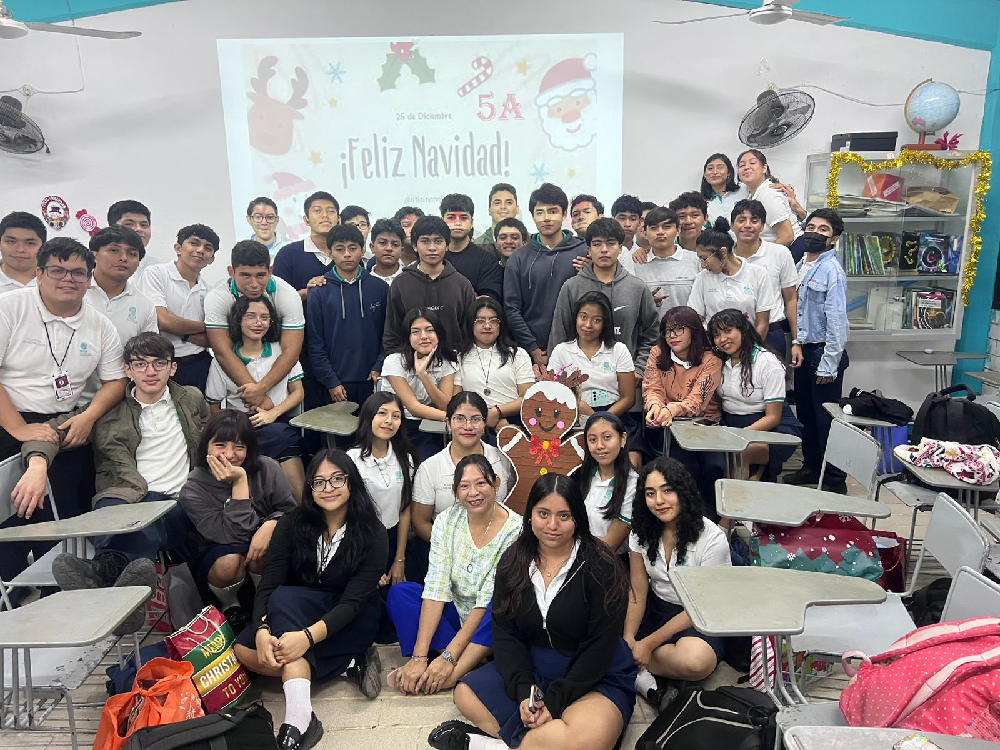
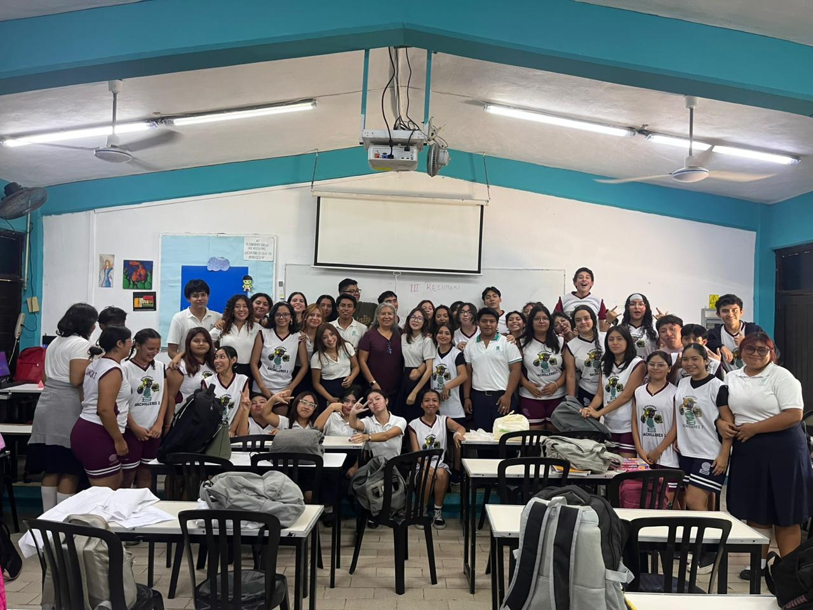
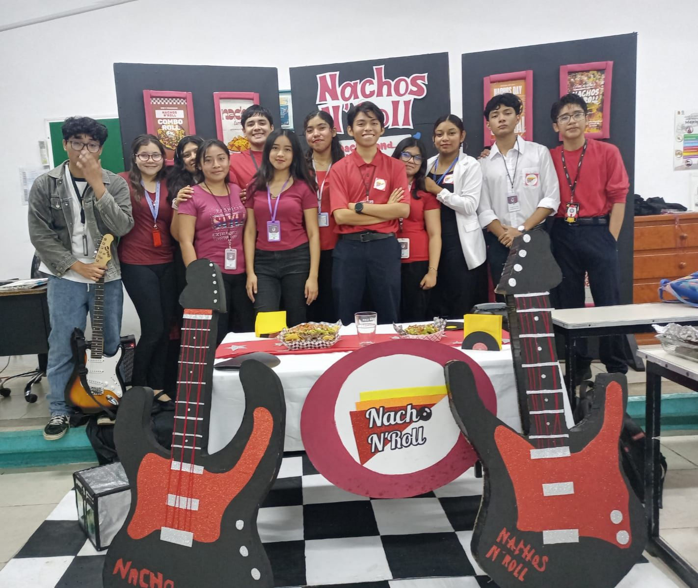
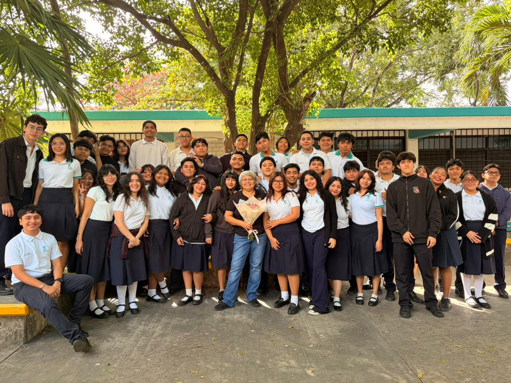
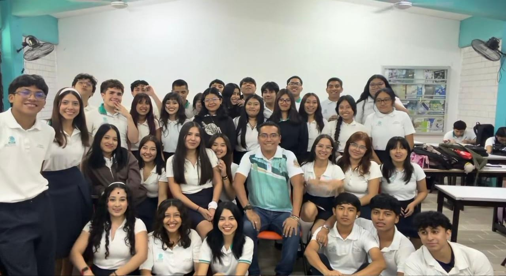

Esta capacitación es parte de un área enfocada en el uso de computadoras, software y herramientas digitales para crear, procesar y compartir información, llamandose Tecnologías de la Información y Comunicación.
Las habilidades básicas necesarias para desarrollarse por completo en la capacitación incluyen el manejo básico de computadoras, uso de programas como Word y Excel, creatividad digital y sobre todo un pensamiento lógico para la resolución de problemas.
Por otro lado lo que te espera al entrar a esta capacitación es una vida llena de proyectos digitales como la creación de páginas web (como está), crear bases de datos simples y diseño digital.

Esta capacitación es parte de un área que desarrolla la capacidad de expresar ideas de forma clara, oral y escrita en distintos medios.
Las habilidades básicas necesarias para desarrollarse por completo en la capacitación incluyen la expresión oral y escrita de manera fluida, comprensión lectora y pensamiento crítico para poder comunicar un mensaje de manera correcta.
Por lo general al entrar en esta capacitación estarás rodeado de exposiciones, debates, ensayos, creación de contenido y campañas informativas.

Esta capacitación es parte de un área que se enfoca en la organización y gestión eficiente de recursos para lograr objetivos como crear empresas.
Las habilidades básicas necesarias para desarrollarse por completo en la capacitación incluyen liderazgo, organización, buen criterio para la toma de decisiones, trabajo en equipo y planeación.
Al ingresar a esta capacitación te encontrarás con retos como la creación de una empresa desde 0, organización de eventos, planes de negocios y proyectos emprendedores.

Esta capacitación es parte de un área dedicada al registro, control y análisis de los recursos económicos de una empresa o persona.
Las habilidades básicas necesarias para desarrollarse por completo en la capacitación incluyen el manejo de números con facilidad, atención al detalle, pensamiento lógico y un gran sentido de responsabilidad.
Por otro lado lo que te espera al entrar a esta capacitación son proyectos como la elaboración de balances financieros, estados financieros de empresas, control de ingresos y egresos y simulaciones de empresas a las que realizar un trabajo contable.

Esta capacitación es parte de un área orientada a la atención de visitantes y la promoción de destinos turísticos, algo que es muy relevante por la zona en la que nos encontramos.
Las habilidades básicas necesarias para desarrollarse por completo en la capacitación incluyen la atención al cliente, comunicación clara y asertiva, control básico de varios idiomas como ingles y francés y cultura general.
Por lo general al entrar en esta capacitación te encontrarás con proyectos como realizar guías turísticas, organización de viajes, promoción de destinos turísticos y visitar hoteles y lugares turísticos.